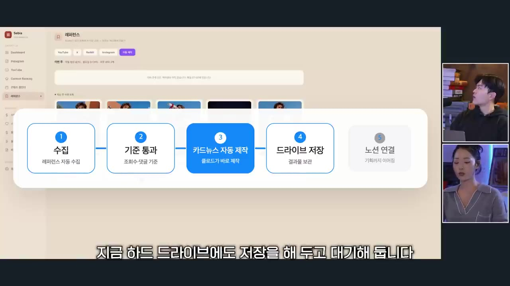
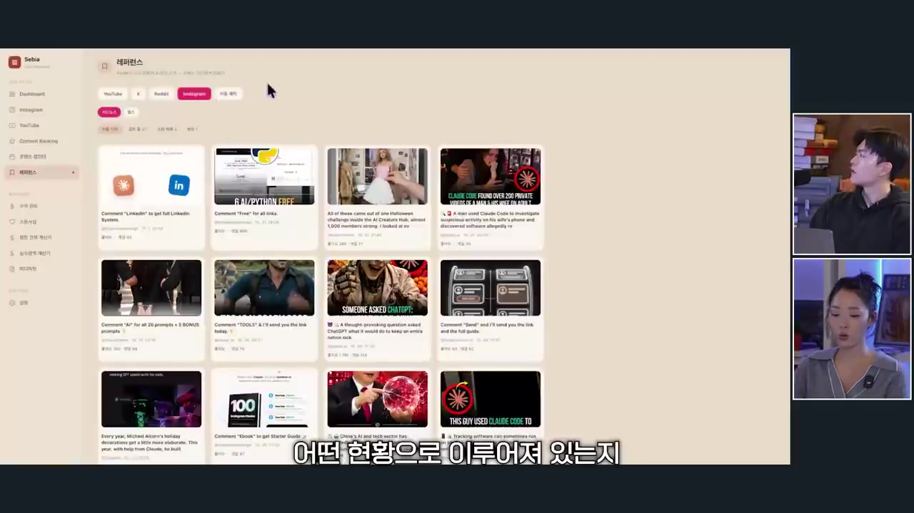
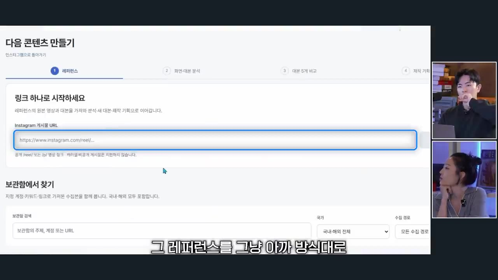
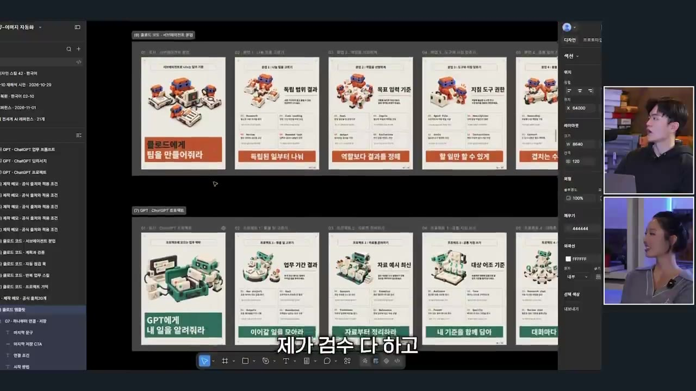
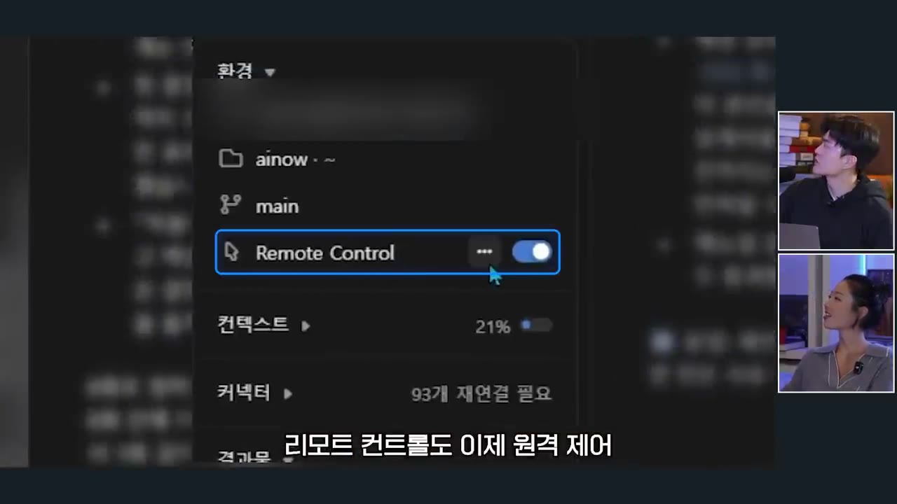
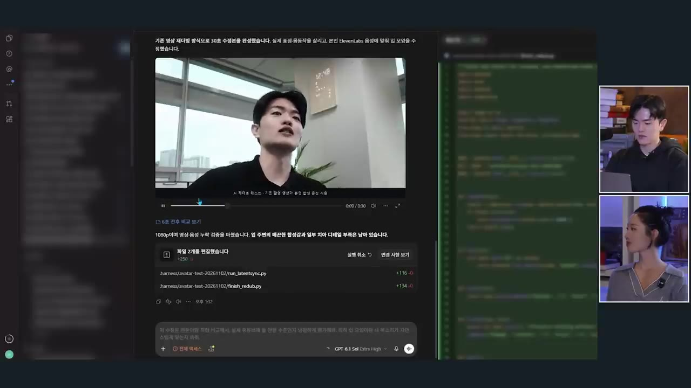
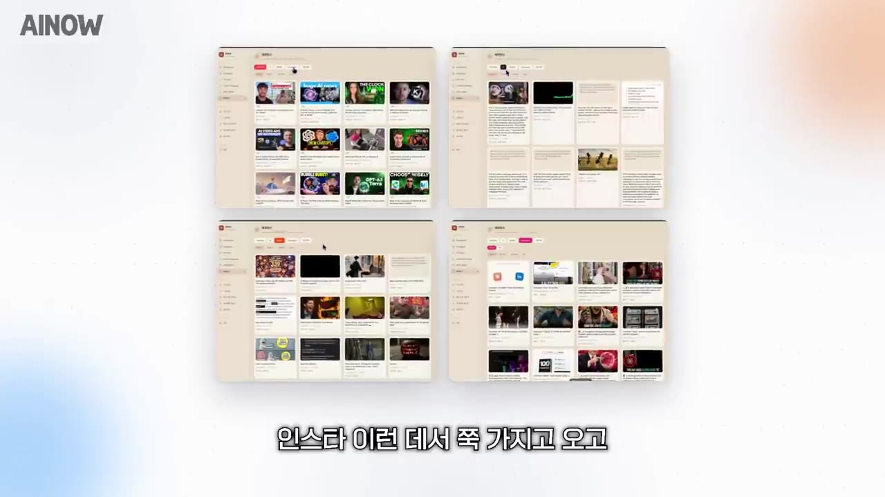

AI 크리에이터 2명이 매일 쓰는 클로드코드 인스타 작업 화면 공개ㅣ레퍼런스 수집부터 카드뉴스 제작까지
▶ 원본 영상 보기한눈에 보기
- 두 AI 크리에이터가 클로드 코드로 만든 인스타 작업 화면을 공개한다. 해외 레퍼런스를 매일 아침 자동 수집하고, 기준을 넘긴 것만 카드뉴스로 만들어 노션에 쌓는 구조다.
- 릴스는 아직 반자동이다. 터진 릴스를 후킹·대본·화면 단위로 뜯어보고, 내 방식으로 바꿔 대본을 만든다.
- 초반에는 내 아이디어보다 검증된 해외 레퍼런스를 따라 하는 것이 정답이고, 계정이 커지면 내 서사를 넣는다.
- 대시보드는 자동화 도구이면서 작업 방식을 균일하게 만드는 기준 역할을 한다. 같은 구조로 여러 계정을 복제 운영하는 실험도 하고 있다.
- 자동화에 앞서 필요한 것은 비효율의 시기를 버티는 성실함과 AI에 대한 관심이라고 한다.
이런 분께 도움이 됩니다
- 클로드 코드로 인스타(카드뉴스·릴스) 제작을 자동화하려는 분
- AI 크리에이터를 막 시작해서 소재·레퍼런스를 어떻게 모아 쓸지 궁금한 분
- 영상 후반부에서 소개하는 11월 18일 무료 강의(아래 정리)가 자신에게 맞는지 판단하려는 분
핵심 내용
초반 전략: 레퍼런스부터 따라 한다
- 계정 초반에는 내 취향보다 해외에서 이미 검증된 레퍼런스를 소화해 발행하는 것이 정석이라고 한다. (5:20, 6:52)
- 예: "GPT를 10배 똑똑하게 하는 프롬프트 5가지"가 반응이 좋았다면 키워드만 바꿔 "클로드를 10배 똑똑하게"로 만든다. 그대로 베끼면 문제지만, 주제를 바꾸면 사람들이 반응한 기준은 가져올 수 있다.
- 구독자·팔로워 100만이 넘는 글로벌 뷰티 크리에이터도 "터진 콘텐츠 3개를 찾아 믹스"하는 식으로 기획한다고 한다.
- 계정에 힘이 생기면 내 취향과 서사를 넣는다. (6:23)
- 수비 님은 릴스 스킬 안에 "내 서사를 꼭 물어봐라"는 인터뷰 단계를 넣었다. 클로드가 경험을 물어봐서 내 이야기가 반드시 들어가게 한다.
- 새로 창조하면 조회수가 크게 나올 수도, 안 나올 수도 있다. 터진 콘텐츠를 조합하면 일정 수준 이상은 나온다.
💡 레퍼런스를 따라 하지 않을 이유가 없다 — 이미 반응이 검증된 기준을 쓰기 때문.
카드뉴스 완전 자동화 (수비 님)
- 계정 지정
- 아침 수집
- 할당량 필터
- 자동 제작
- 저장·연결
- 1계정 지정
유튜브·X·레딧·인스타 계정을 지정한다. 인스타는 에피파이, 나머지는 어사이드로 설정한다(도구명은 자막 표기, 불분명).
- 2아침 수집
매일 아침 7시에 좋아요·조회수 같은 지표와 게시물을 모은다. (0:30)
- 3할당량 필터
조회수·댓글이 기준 이상인 게시물만 통과시킨다.
- 4자동 제작
통과한 게시물로 카드뉴스를 자동 생성한다.
- 5저장·연결
하드드라이브에 저장하고, 노션의 기획 페이지·자료 공유 페이지·레퍼런스 원본으로 바로 넘어갈 수 있게 한다.

- 업로드는 자동화하지 않았다. 인기 음악은 앱에서만 선택할 수 있어서 자동 업로드로는 음악이 안 들어간다. (2:37)
- 결과물: 이번에 올린 카드뉴스는 조회수 최소 2만이다. 예전에 올린 것 중에는 10만이 넘는 것도 많아서, 바꾼 지 얼마 안 돼 더 지켜봐야 한다고 한다. (9:52)
- 대시보드는 계속 살이 붙는 자가 발전 시스템으로 키우는 것이 중요하다고 한다.
대시보드 구성
- 유튜브·X·레딧·인스타 레퍼런스를 한곳에서 보고, SNS 현황(조회수·팔로워)과 콘텐츠 랭킹을 확인한다.
- 수비 님은 대시보드를 자주 보진 않는다. 흩어진 데이터를 모아 두었다가 필요할 때 찾아보는 용도다. (4:28)

릴스 제작과 크리에이터 스튜디오 (영선 님)
- 해외 크리에이터 수집
- 원본 스크립트 번역
- 후킹·대본·화면 분석
- 내 방식으로 재구성
- 대본 5개 생성
- 1해외 크리에이터 수집
지정한 해외 크리에이터의 영상 중 조회수가 잘 나온 것을 가져온다.
- 2원본 스크립트 번역
영어 스크립트를 한국어로 번역해 읽는다. 번역에는 API(GPT)를 쓴다.
- 3후킹·대본·화면 분석
초반 몇 초에 어떤 단어가 나왔는지, 후킹·본문·행동 유도(CTA) 구조, 화면별 이미지를 분해한다.
- 4내 방식으로 재구성
직접 써 보고 내 방식으로 바꾼다. 분석 결과로 주제별 캡션·대본이 만들어지고, 캐러셀도 분리된다. (12:21)
- 5대본 5개 생성
원문 구조를 기반으로 다양한 버전의 대본 5개가 나온다.
- 레퍼런스 링크를 직접 넣는 기능을 따로 둔 이유가 있다. 대시보드에는 지정한 계정이나 수치를 통과한 것만 수집되기 때문에, 우연히 본 마음에 드는 영상도 분석할 수 있어야 해서다. (12:47)

- 영선 님은 국내 크리에이터를 거의 보지 않는다. 해외 콘텐츠에서 파생된 국내 콘텐츠가 서로 비슷해서 원천을 보는 편이 낫다고 한다.
- 방식이 트렌드에 따라 계속 바뀌어서 처음 만든 대시보드는 손이 덜 가게 됐고, 이후 링크 분석 기능을 새로 만들었다.
- 이 방식으로 계정이 14만까지 왔고, 앞으로도 작업의 7~8할은 이 방식, 1~2할은 하고 싶은 창작을 할 것이라고 한다. (12:21)
- 이렇게 많이 뜯어보다 보니 직감이 훈련된다. 유튜브 등 다른 플랫폼도 한 번 보면 구조가 분해돼 보인다.
💡 정성적으로 보이는 분석이 쌓이면 직감이 되고, 그 직감이 다른 플랫폼에서도 평균 이상을 만든다.
대시보드의 진짜 역할과 콘텐츠 무한 복제
- 캐러셀 무한 복제를 테스트 중이다. 원천 소스를 모아 뜯은 뒤 내 방식으로 다시 합치고, 피그마에 원천 소스를 정리해 두면 이미지와 레이어까지 기준을 이해해 일관된 품질이 나온다. (15:48)
- 올리기 전에는 직접 검수하고 아는 지식 범위 안에서만 올린다. GPT 버전은 색깔만 바꿔 따로 만든다.
- 제작 단계까지는 이 영상에서 보여 주지 않았고, 수강생에게 공개하겠다고 한다.

- 대시보드는 작업 방식을 균일하게 만드는 역할이다. 그 위에 AI 도구를 붙여 제작을 양산한다. (16:19)
- 팀원이 생겨도 같은 대시보드를 보고 같은 기준으로 일하게 해 주는 내부 워크플로 기준이 된다. (18:50)
- 영선 님은 AI가 아닌 다른 카테고리에서 계정을 10~20개 운영하는 실험을 하고 싶다고 한다. 주식 같은 분야도 가능하다는 입장이다.
💡 앞으로는 만드는 능력보다 만든 것을 팔고 노출하는 능력이 희소하다는 것이 영선 님의 생각이다.
인스타 조회수 수익 (영상 속 주장)
- 영선 님이 아는 마케팅 대행사 대표는 인스타 계정을 20~30개 운영한다고 한다. (17:26)
- 계정당 조회수 수익은 월 50만~200만 원 수준이고, 평균 100만 원에 20개면 월 2천만 원이라는 계산이다.
- 인스타 조회수 수익은 있다 없다를 반복하는 혜택이라고 한다. 지인에게 들은 이야기이고 확인된 수치가 아니다.
클로드 데스크톱 앱 (수비 님)
- 터미널 대신 클로드 데스크톱 앱에서 작업한다. 채팅 UI라 읽기 쉽고, 터미널의 검은 화면보다 초보자가 접근하기 편하다. (19:21)
- 앱에서 버튼으로 되는 기능:
- 리모트 컨트롤(핸드폰 원격 제어)을 켜기만 하면 된다.

- 컨텍스트 관리를 슬래시 명령 없이 버튼으로 한다.
- 커넥터 연결 상태와 결과물이 보인다.
- 채팅 안에서 브라우저를 띄워 요소를 지정할 수 있다.
- 권한 모드를 설정에서 바꾸고, BTW 사이드 채팅도 쓴다.
- 최근 업데이트로 가독성이 예전보다 조금 떨어졌다는 불만도 있다.
- 영선 님은 10월 15일에 화면이 거의 통째로 바뀐 이 앱 기준으로, 클릭만으로 쓰는 방법을 정리한 강의 영상을 공개했다. 장기적으로 내가 편해야 주변 사람과 팀원을 가르치기도 편하다고 한다. (20:48)
100% AI로 만든 강의 영상
- 위 앱 소개 영상은 클로드와 GPT로 100% 만들었고, 편집도 하지 않았으며, "자고 일어나니 끝"이었다고 한다. 화면 녹화와 목소리 모두 초안 수준이다. (21:17)
- 영선 님은 이를 보고 "VOD 강의 시장은 끝났다"고 생각했다고 한다. 사람들에게 중요한 것은 목소리가 아니라 강의 내용이기 때문이다.
- AI 목소리는 의식하고 들으면 티가 난다. 그래서 기존 촬영 영상에 일레븐랩스로 합성한 목소리를 넣고 입 모양을 다시 맞추는 테스트도 하고 있다. (22:19)
- 눈 깜빡임·손짓·몸의 움직임은 실제 촬영본 그대로다.
- 아는 AI 크리에이터는 자기 얼굴을 100% AI로 만들어 촬영 없이 양산하는데, 조회수가 5천~3만 정도 나온다고 한다. 해외에는 이런 계정이 이미 많다고 본다.

무료 강의와 수강생 성과
- 수비 님 수강생 중 육아 계정 운영자가 AI 정보성 계정 운영 강의를 듣고 폭발적으로 성장했고 협찬이 계속 들어온다고 한다. (27:00)
- 강의 커리큘럼 흐름은 다음과 같다. 클로드 코드를 전혀 몰라도 시작할 수 있게 구성했다고 한다.
- 클로드 코드 세팅
- 계정 세팅
- 소재 크롤링
- 소재 선별
- 카드뉴스·릴스 기획
- 제작 자동화
- 1클로드 코드 세팅
클로드 MD를 내게 맞게 세팅하는 것부터 시작한다. (28:03)
- 2계정 세팅
내 계정을 설정한다.
- 3소재 크롤링
유튜브·레딧·인스타 등에서 소재를 자동 수집해 노션에 쌓는다. 1주차는 대시보드 없이 노션만 쓴다.

소재를 수집해 정리한 노션형 화면 네 장 · ▶ 29:25 - 4소재 선별
좋은 소재를 고르는 눈을 기른다.
- 5카드뉴스·릴스 기획
카드뉴스 구성과 나만의 디자인을 찾고, 릴스는 30초 구조(후킹·대본·CTA)를 배운다.
- 6제작 자동화
클로드 코드로 이미지를 뽑고 저장하는 것까지 자동화한다.
- 영선 님은 자신의 수강생에게 크리에이터 스튜디오 대시보드를 공유하겠다고 했다. 수비 님도 자신의 대시보드를 수강생에게 준다고 한다. (31:11)
- 영상이 내세우는 세 가지 조건
- 인원 제한: 한 명씩 봐 줘야 해서 소수 인원으로 한정한다.
- 100% 환불: 3개월 안에 성과 목표를 달성하지 못하면 강의비 전액을 환불한다.
- 인프라 지원: 두 사람에게 들어오는 광고 업체를 수강생에게 넘기는 등 지속적인 상생 관계를 맺는다.
자동화보다 먼저: 성실함과 버티는 힘
- 콘텐츠로 먹고사는 사람들은 지나치게 성실하고, 그 성실함 때문에 힘든 일을 자동화할 방법을 고민한다. 성실함에 자신이 없으면 이 게임은 어렵다고 한다. (34:21)
- 극강의 효율에 이르기 전에 반드시 비효율의 시기를 견뎌야 한다. 그 시기에 "왜 안 되지"를 생각하지 말고 계속 가야 한다. (35:03)
- 그 시기를 덜 힘들게 만드는 것은 AI에 대한 관심이다. 신기함과 해 보고 싶은 열망이 버티는 동력이 된다. (35:35)
💡 강의를 들을지 판단하는 기준은 AI에 지금 얼마나 관심이 있는지, 앞으로 얼마나 관심을 가질지다.
기억할 숫자·인용
- 계정 14만 팔로워 (영선 님), 아침 7시 자동 수집
- 카드뉴스 최근 조회수 최소 2만, 과거 10만 이상 다수
- 글로벌 뷰티 계정: 틱톡·인스타·유튜브 합쳐 100만~120만
- AI 합성 얼굴 계정 조회수 5천~3만
- 무료 강의: 11월 18일 저녁 8시
- 환불 조건: 3개월 안에 성과 목표 미달성 시 100% 환불
- "극강의 효율을 위해 버티는 비효율의 시기가 있어야 한다."
생각해볼 점
- 월 2천만 원 수익 계산과 수강생 성과는 영상 속 주장이다. 조회수 수익은 인스타 정책에 따라 바뀔 수 있다고 본인들도 말한다.
- 터진 콘텐츠를 조합하는 방식은 비슷한 콘텐츠가 늘어나는 부작용이 있다. 영선 님 스스로 국내 콘텐츠가 비슷해졌다고 말하는 문제가 그대로 반복될 수 있다.
- 이 영상은 유료 강의 홍보를 겸하는 대화이다. 환불 조건의 "성과 목표"가 구체적으로 무엇인지는 나오지 않았으니 신청 전에 확인이 필요하다.
바로 해볼 일
- 내 분야에서 조회수가 잘 나오는 해외 계정 3곳을 골라, 터진 콘텐츠 1개의 후킹·대본·CTA 구조를 직접 분해해 보기
- 레퍼런스를 모을 곳(유튜브·X·레딧·인스타)과 "조회수 몇 이상이면 채택"이라는 할당량 기준을 먼저 정해 보기
- 반복하는 작업 하나를 골라 클로드 코드로 자동화할 수 있는지 시도해 보고, 막히는 부분을 기록하기